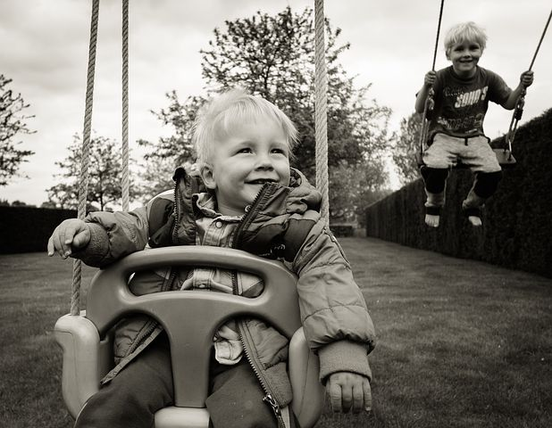
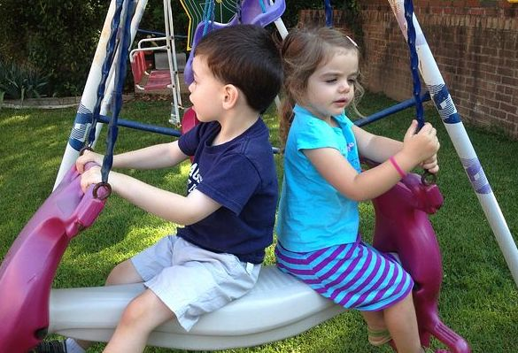
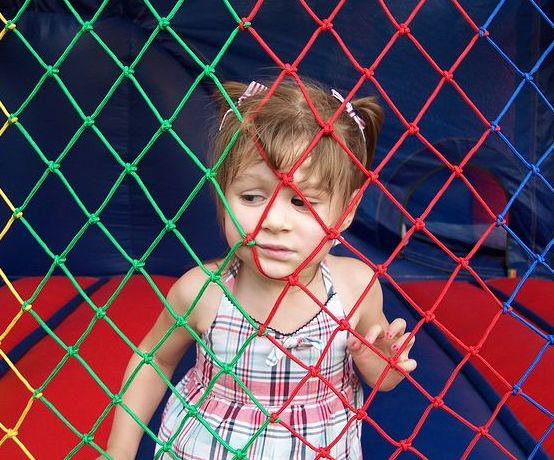
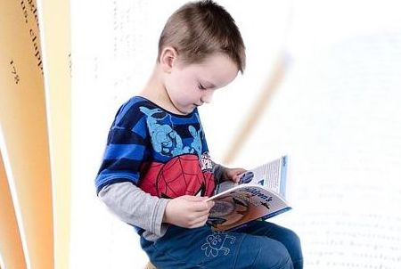
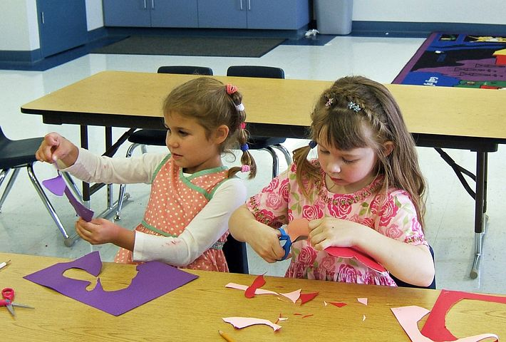

Programs
Nursery
The nursery room allows children that are at least 3 months. In the nursery there are many fun toys for the babies to play with and help them grow. There are toys to help with stand, sitting up, and walking. The babies remain in the nursery until they turn one and transition to the toddler room.
Toddler
The toddler room allows children that are 1 year old. In the toddler room there are many fun toys for the toddlers to play with and help them grow. There are many crafts and activites each day to help the children develop motor skills. The toddlers remain in the toddler room until they turn two and transition to the two year old room.
2 Year Old
The two year old room allows children that are 2 years old. In the two year old there are many fun toys for the kids to play with and help them grow. There are also many fun crafts for the kids to do. The two year olds remain in the two year old room until they turn three and transition to the three year old room.
3 Year Old
The three year old room allows children that are at least 3 years old. In the three year old there are many fun toys for the kids to play with and help them grow. There are also many fun crafts and activites for the kids to do. The three year olds remain in the three year old room until they turn four and transition to the four year old room.
4 Year Old
The four year old room allows children that are at least 4 years old. In the four year old room there are many fun toys for the kids to play with and help them learn. There are many fun and educational crafts and activitied done daily. The four year olds remain in the four year old room until they turn five and transition to the five year old room.
5 Year Old
The five year old room allows children that are at least 5 years old. In the five year old room there are many fun toys for the kids to play with and help them learn. There are many fun and educational activities done daily. The five year olds remain in the five year old room until they start elementary school and transition to the school age room.
School Age
The school age room allows children that are between kindergarten and fifth grade. In the school age room there are many fun toys for the babies to play with and help them learn. There are many fun and educational crafts and activities done on no school days and throughout the summer. The school agers remain in the school age room until they transition to middle school.